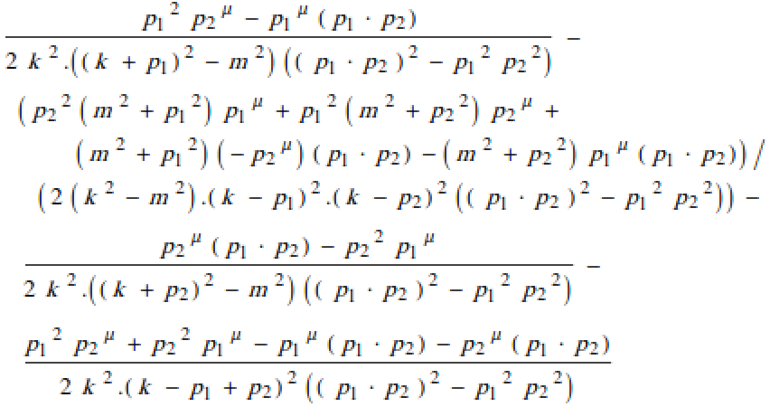
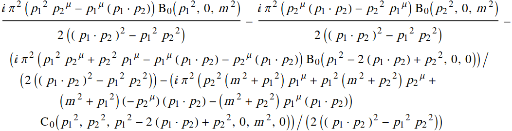
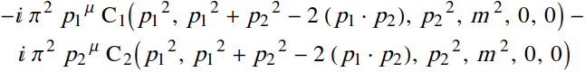
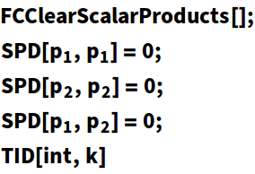
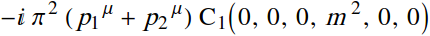

By default, all the tensor integrals are reduced to the Passarino-Veltman scalar integrals A0, B0, C0, D0 etc.
In[2]:=
Out[2]=

Scalar integrals can be converted to the Passarino-Veltman notation via the option ToPaVe
In[3]:=
Out[3]=

We can force the reduction algorithm to use Passarino-Veltman coefficient functions via the option UsePaVeBasis
In[4]:=
Out[4]=

The basis of Passarino-Veltman coefficient functions is used automatically if there are zero Gram determinants
In[5]:=

Out[5]=

In FeynCalc, Passarino-Veltman coefficient functions are defined in the same way as in LoopTools, which is a quite common convention. If one wants to use a different definition, it is useful to activate the option GenPaVe